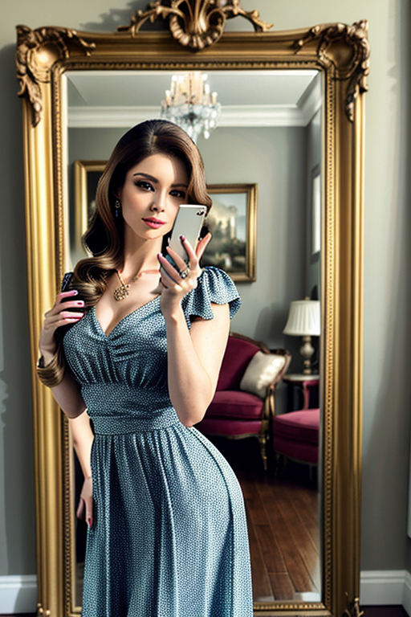
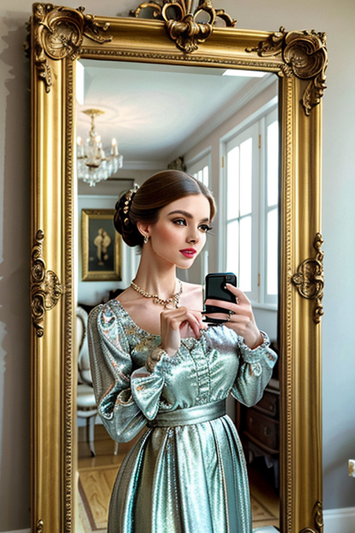
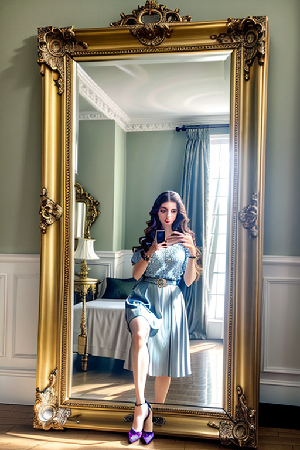
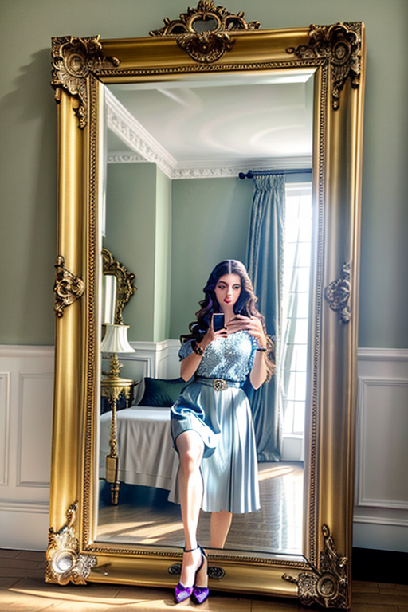
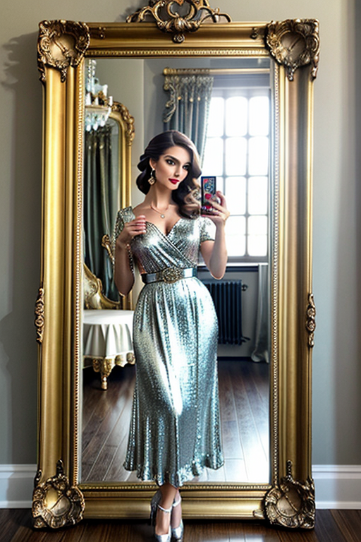
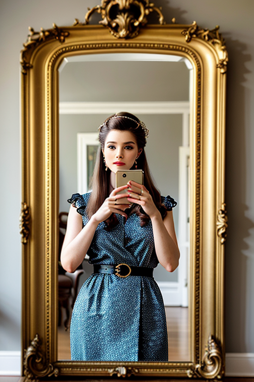
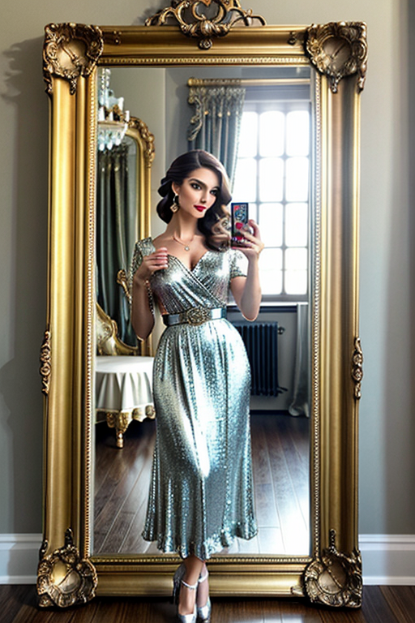
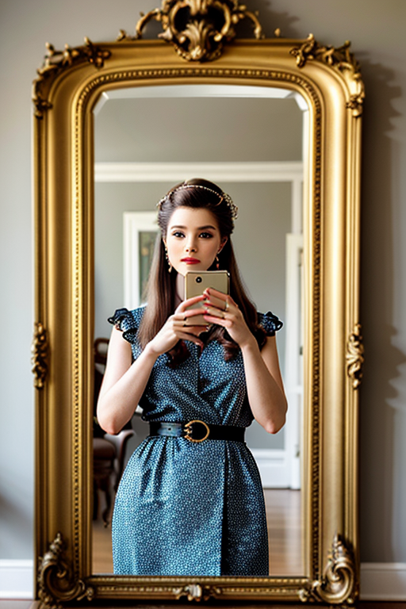
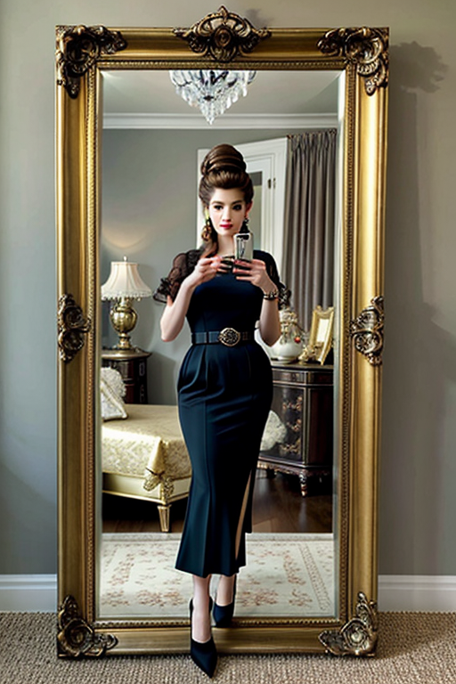
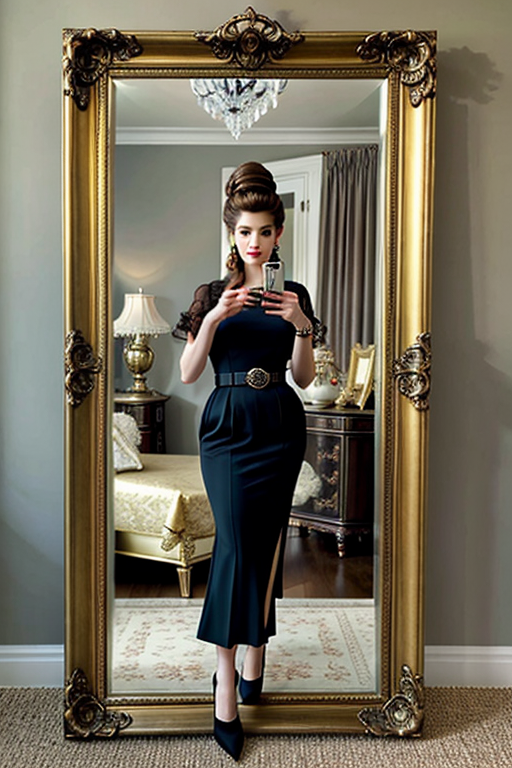

This set explores mirror selfie photo editing through vintage aesthetics and cool tone under soft lighting. Compositions use leading lines with urban backdrop, keeping focus clear and tidy. Details like retro styling and balanced colors make browsing easy.
Browse mirror images. Page 3 of curated mirror-style portrait collection.




 

 





 



Designed for readers looking into page3, this page emphasizes clarity and consistency. Alt text and headings are optimized to make the content accessible and to provide consistent cues across the site. Subtle differences in wording help avoid duplication across similar pages. If you are comparing alternatives, keep an eye on subtle differences in framing, contrast, and color balance. Alt text and headings are optimized to make the content accessible and to provide consistent cues across the site. Subtle differences in wording help avoid duplication across similar pages. Bookmark the page if it’s useful; updates aim to improve clarity, speed, and overall structure over time. The image aims to deliver a straightforward visual impression while keeping the file lightweight. A brief explanation clarifies the subject and lighting so visitors can quickly decide where to go next. The image aims to deliver a straightforward visual impression while keeping the file lightweight. A brief explanation clarifies the subject and lighting so visitors can quickly decide where to go next. For more context, browse related entries linked nearby; each page offers a slightly different angle to limit overlap.